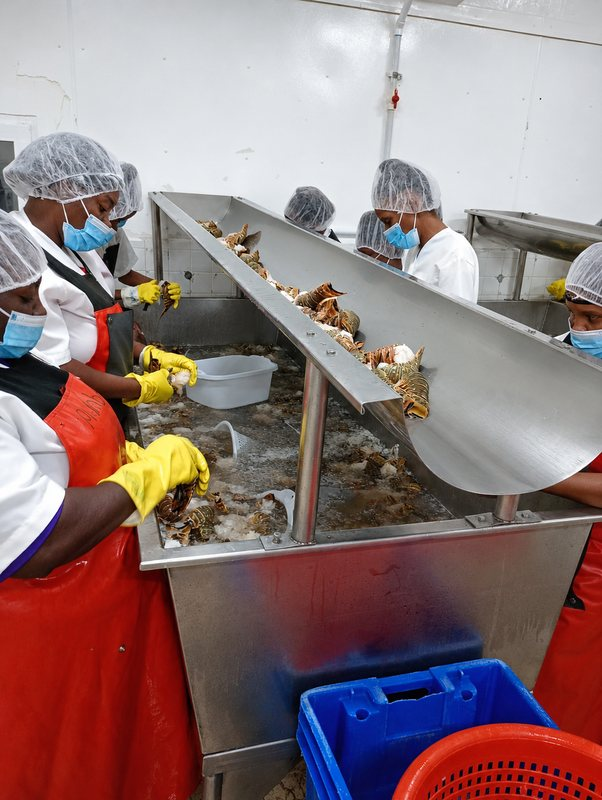
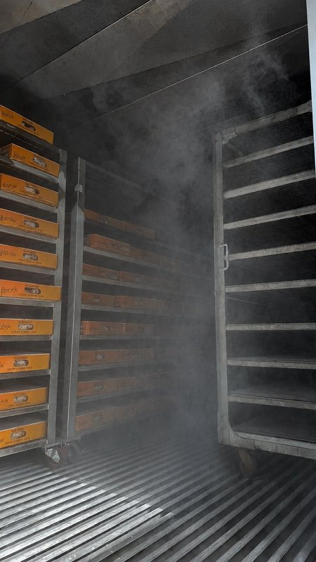

Careful handling and better information
How the co-operative works with its product, its records and the wider management of Belize's fisheries.
To operate in accordance with HACCP and U.S. FDA regulations.
Food safety and consumer protection are among our highest priorities as we support globally recognized artisanal fishing.

Handling that protects the product
NATFISH has a long-standing focus on processing, quality control and market access.
Seafood is only as good as the care it receives between the water and the buyer. Consistent handling, grading and cold-chain discipline are what let a small fishing nation compete on quality.

Knowing where the catch came from
NATFISH has participated in electronic catch-documentation and traceability initiatives designed to improve operational efficiency and seafood information through the supply chain.
Good catch information helps the co-operative run more efficiently and helps buyers understand what they are purchasing. It is a practical tool as much as a compliance one.
Source: FishWise, the story of the National Fishermen's Co-operative in Belize.

Part of Belize's fisheries management effort
NATFISH has participated in Belize's spiny lobster Fishery Improvement Project and in broader fisheries-management efforts.
A Fishery Improvement Project brings industry, government and non-governmental partners together to work on the same fishery over time. For a co-operative whose members depend on that fishery, the interest is direct.
Source: FishSource, Belize spiny lobster FIP.
Closed seasons are part of this. Belize closes its lobster and conch fisheries each year so stocks can breed, and respecting those dates is a basic part of responsible fishing. View Belize's seafood seasons.
A note on certifications. Working in accordance with a regulation is not the same as holding a certificate against it. Certifications, standards and product-specific claims should be confirmed directly with NATFISH, which can advise what applies to a given product and a given market.
Questions about standards or documentation?
The team can confirm what applies to a specific product and what documentation is available for your market.